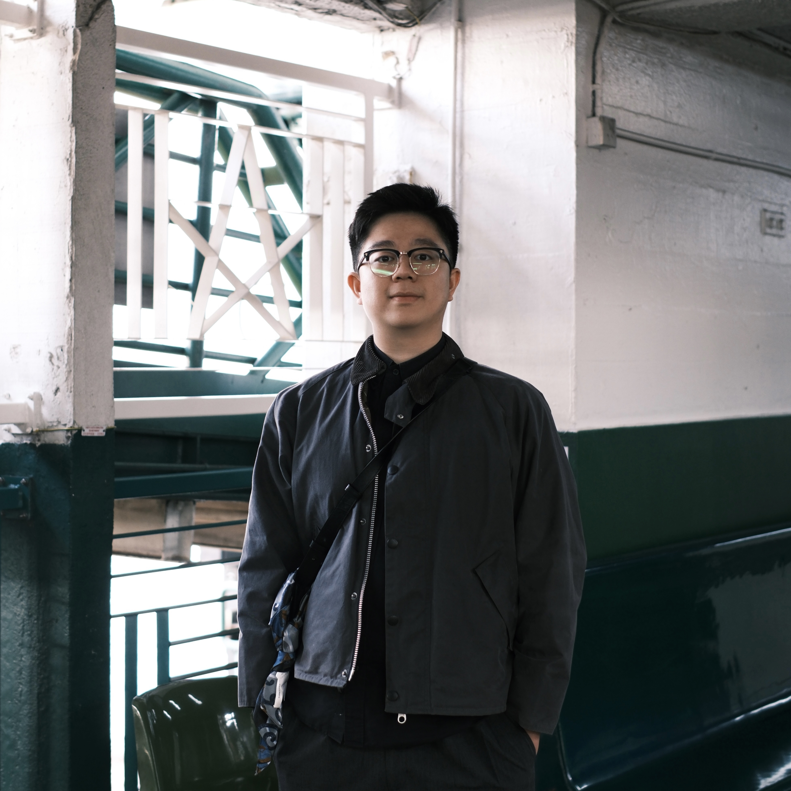
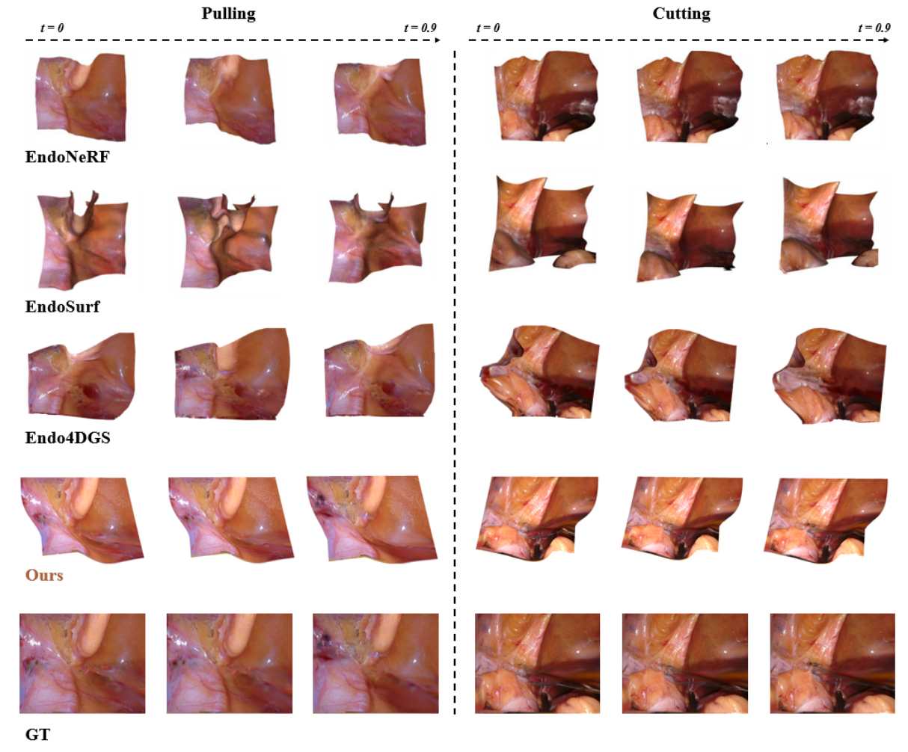
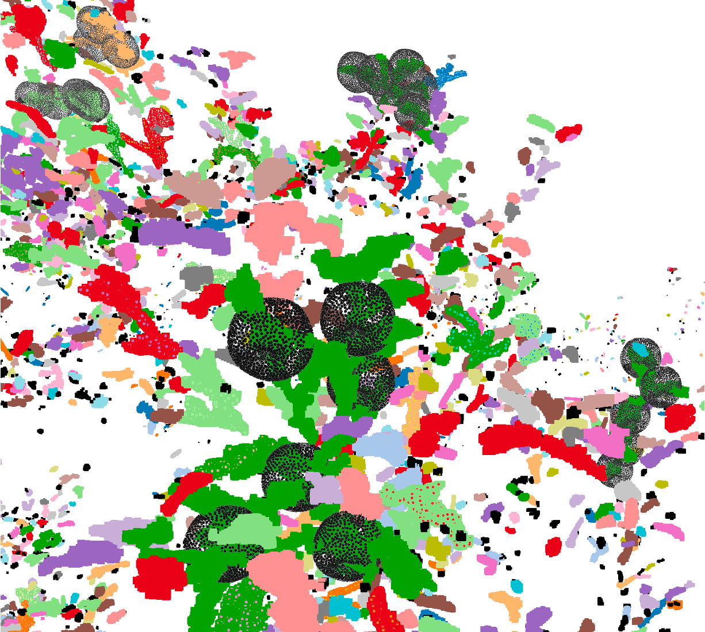
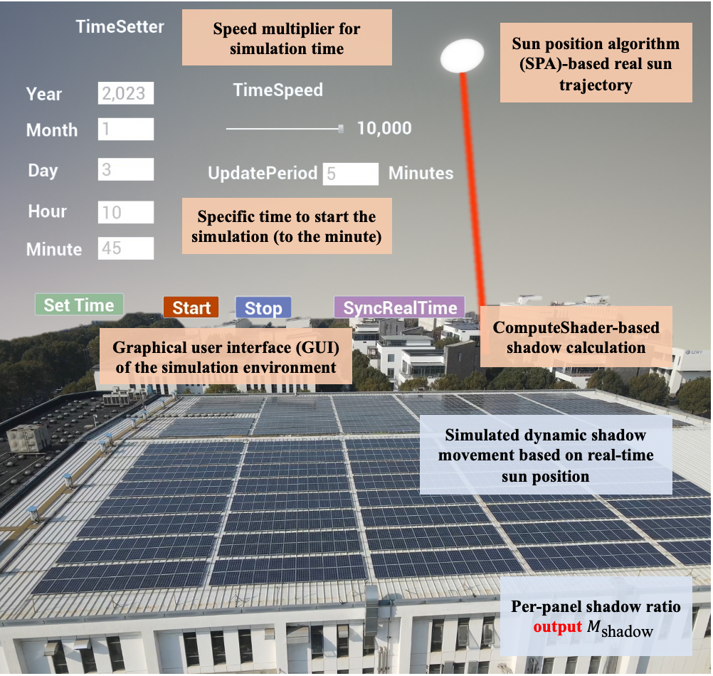
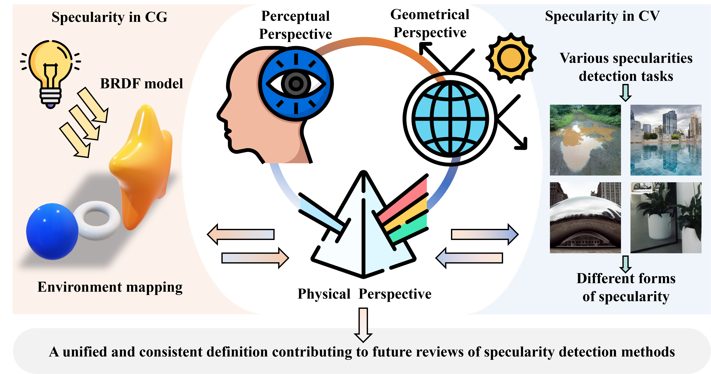
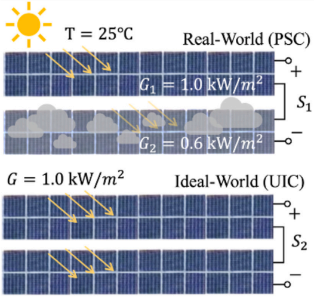
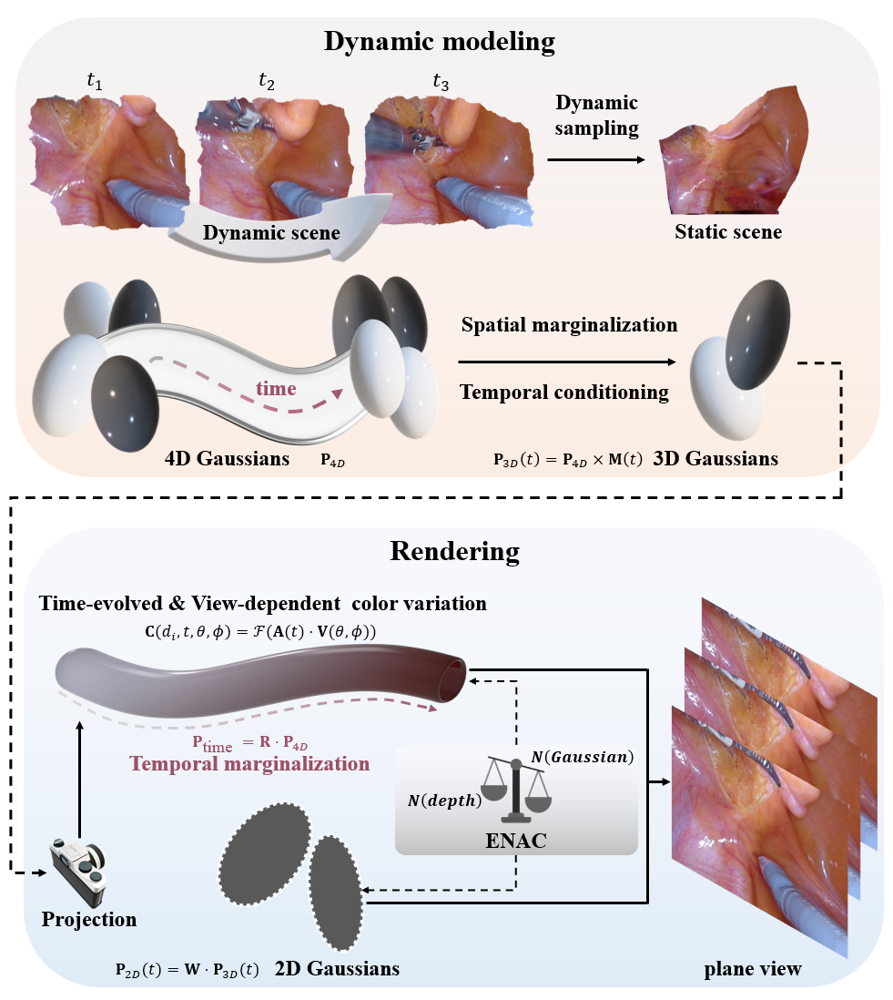
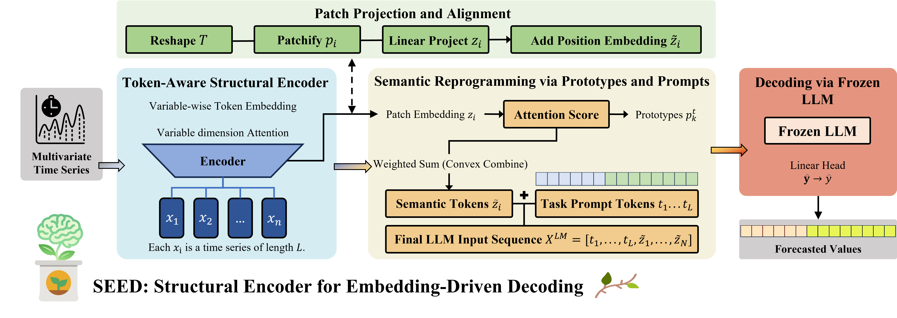

International Keynote
APEC AI Sub-Forum keynote, on behalf of Baidu ACG.
Speaking on production LLM and Agent deployment across the Asia-Pacific economic community.
Forward Deployed Engineer Baidu ACG
Forward Deployed Engineer at Baidu AI Cloud Group (ACG). PhD, University of Liverpool. Bringing LLM and Agent systems into production for enterprises across 10+ countries.

About
I hold a Ph.D from the University of Liverpool, advised by Dr. Jieming Ma, Dr. Zhongbei Tian (University of Birmingham) and Dr. Hai-Ning Liang (HKUST, GZ).
My general research focuses on industrial intelligence. In detail, I explore the application and optimization of 3D vision and LLMs across various domains, including photovoltaics (PV), medical imaging and robotics.
Before Ph.D, I had the honor to work with Dr. Jize Yan and Dr. Jie Zhang (University of Bath) at University of Southampton. I've also interned at DJI, Deloitte, and worked as a research assistant at JITRI with Dr. Ji Ge (University of Toronto).
Deep work across the modern LLM and Agent stack: training, tuning, system architecture, inference, deployment.
Engineered for the realities of enterprise production: regulated data, on-prem and hybrid clouds, latency budgets, audit trails.
Speaking, training, and on-site deployment for enterprises and institutions across Asia, the Middle East, Europe, and Latin America.
Speaking on production LLM and Agent deployment across the Asia-Pacific economic community.
Technical briefing on LLM applications in border and trade operations.
Major SOE rail operator. Tier-1 seaport. Energy and chemicals SOE.
Universities and enterprises served on the ground.
A Forward Deployed Engineer ships LLM and Agent systems directly with the customer. Model work, system integration, on-site delivery, in one role.
Industries served
Selected Publications

ENDO-G2T: Geometry-Guided & Temporally Aware Time-Embedded 4DGS for Endoscopic Scenes
IEEE ICASSP 2026, Barcelona, Spain
arXiv:2511.21367

CountingFruit: Language-Guided 3D Fruit Counting with Semantic Gaussian Splatting
arXiv:2506.01109, 2025

3D-PV: Enhancing PV Power Prediction by Modeling Spatial Uncertainty under Dynamic Shading Conditions
Expert Systems With Applications, 2025

A Comprehensive Survey of Specularity Detection: State-of-the-Art Techniques and Breakthroughs
Artificial Intelligence Review, 2025

Temporal Environment Informed Photovoltaic Performance Prediction Framework with Multi-Spatial Attention LSTM
Solar Energy, 2025

Real-Time Dynamic Scene Representation for Endoscopic Images with 4D Gaussian Splatting
IEEE ISBI 2025, Houston, USA

SEED: A Structural Encoder for Embedding-Driven Decoding in Time Series Prediction with LLMs
IEEE BDAI 2025, Suzhou, China

Mirror-Yolo: A Novel Attention Focus, Instance Segmentation and Mirror Detection Model
IEEE ICFSP 2022, Paris, France
20+ peer-reviewed publications in total. Full list on Google Scholar.
From research labs to applied LLM and Agent work for the enterprise.
Baidu
Forward Deployed Engineer, Baidu AI Cloud Group (ACG).
LLM and Agent systems for enterprise customers across Asia, the Middle East, Europe, and Latin America.

JITRI
Research Scientist, Jiangsu Industrial Technology Research Institute.

DJI
Software Engineer Intern.

Deloitte
Software Engineer Intern.

University of Liverpool
Ph.D. in Computer Science

University of Southampton
M.Sc. in Computer Science

Shenzhen University
B.Eng. in Computer Science